primero que nada, mis hábitos, mejoraron un paso más.
por ejemplo, dormí bien 61% del mes, comparado con un 53% el mes pasado.
no vi youtube o instagram en un tercio del mes, y medité 77% de los días.
creo que son pasos importantes a ir tomando y seguiré informando mi progreso.
este mes entraré a la escuela, por lo que tengo de meta comer bien, dormir bien y empezar a ir al gimnasio. es algo que llevo ya un rato queriendo hacer y es el momento (porque en la escuela es gratis), entonces lo haré.
estoy feliz porque siento que he aprendido algunas cosas, aunque siento también que me falta una de las más importantes: aprender a balancear la escuela y mi vida. intentaré centralizar mi estudio con el uso de obsidian, pero también de herramientas analógicas como libretas para escribir. y tengo que leer, leer mucho mucho, algo bueno es que ya tengo un hábito, pero aún así, será mucho.
en fin, les dejo mis fotos favoritas de mi vida este mes.
 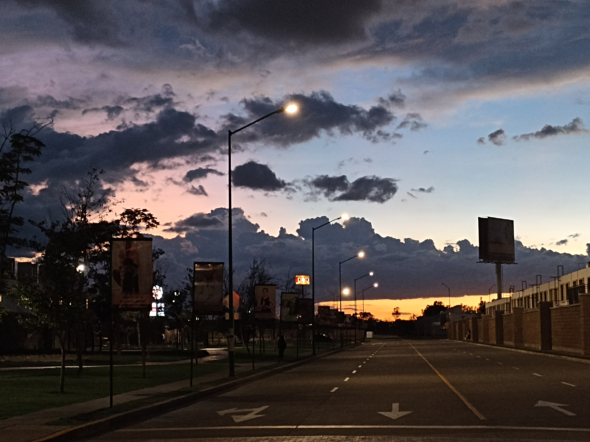
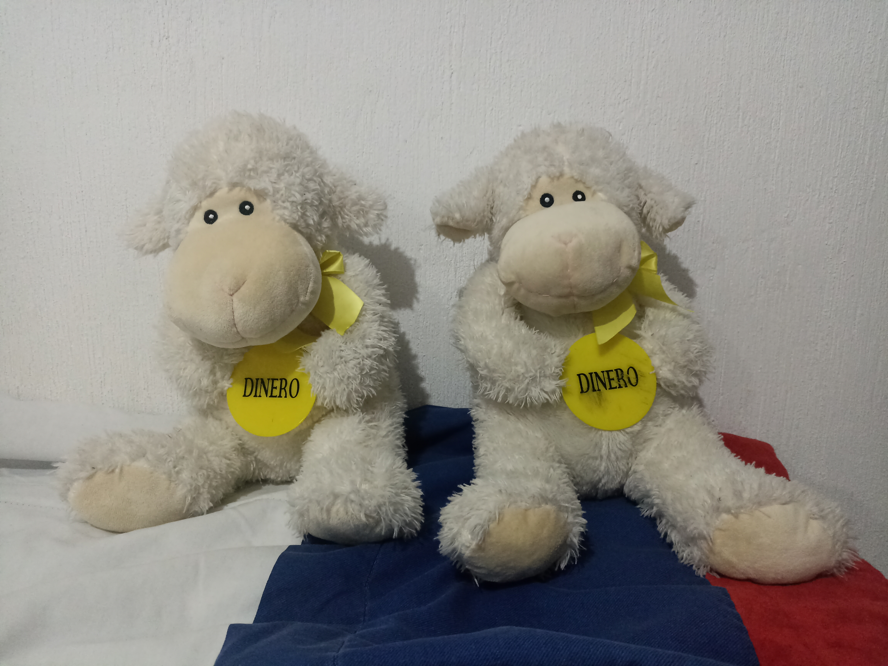
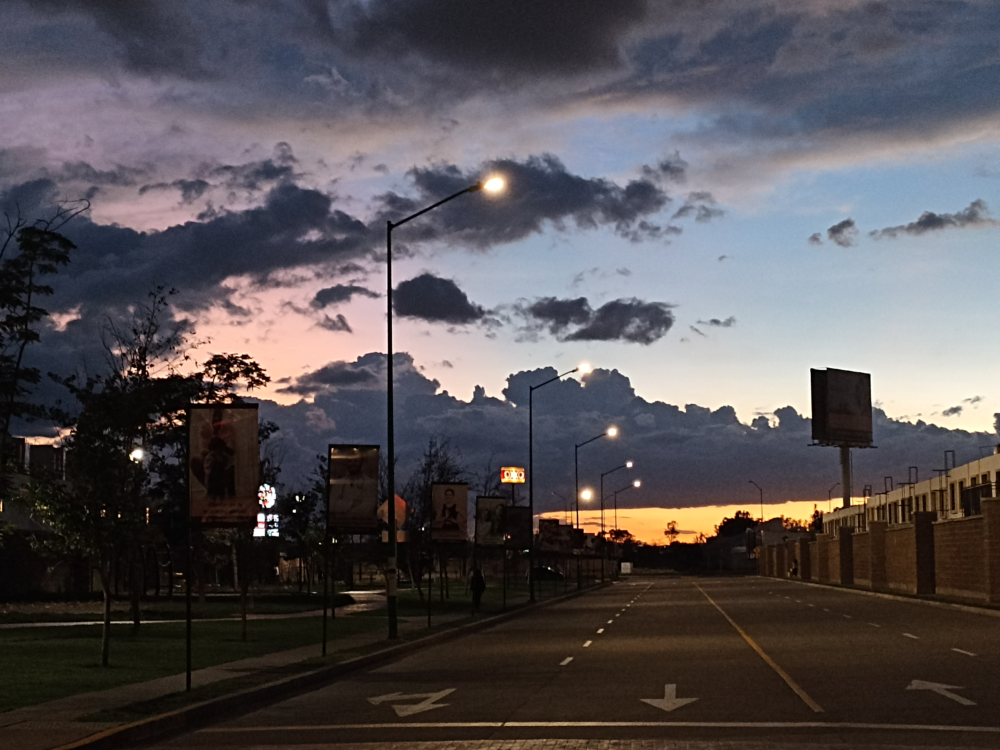
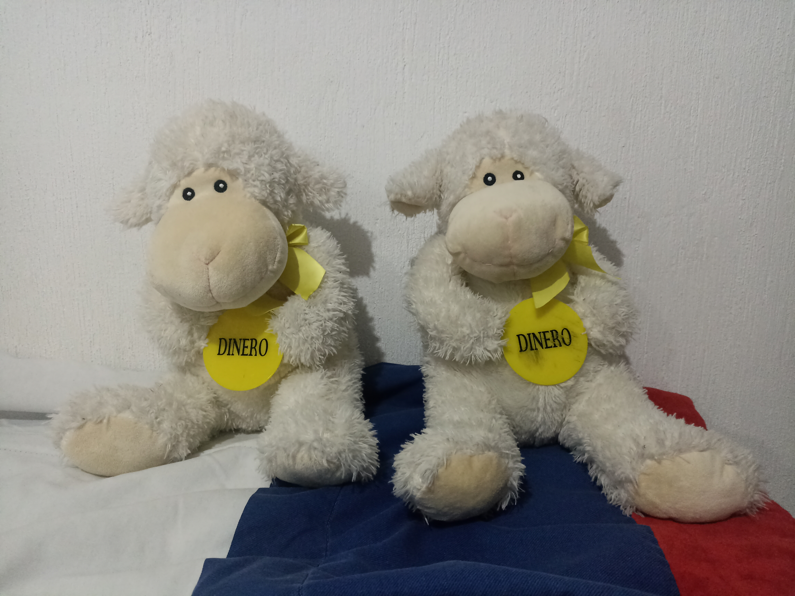

 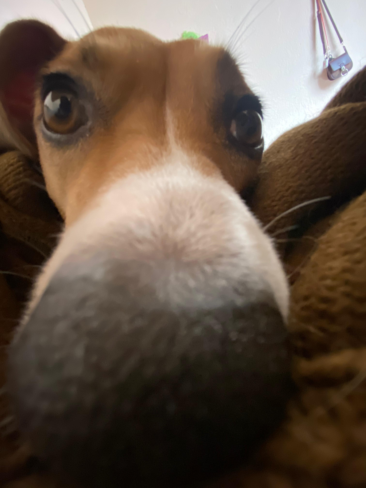
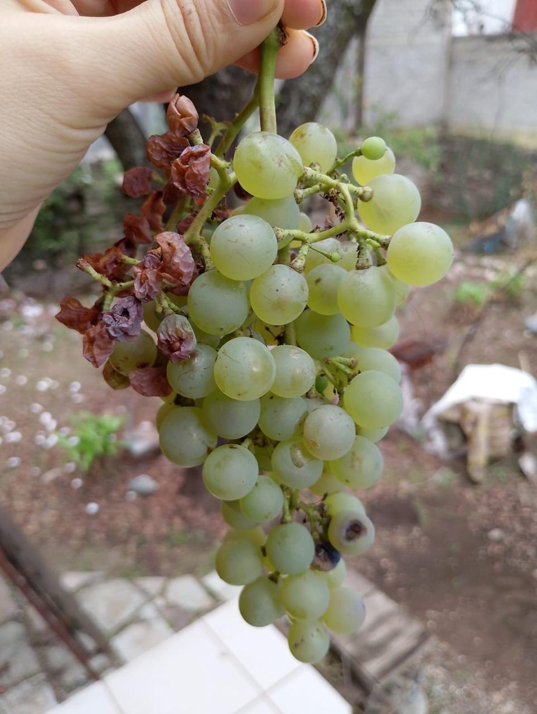
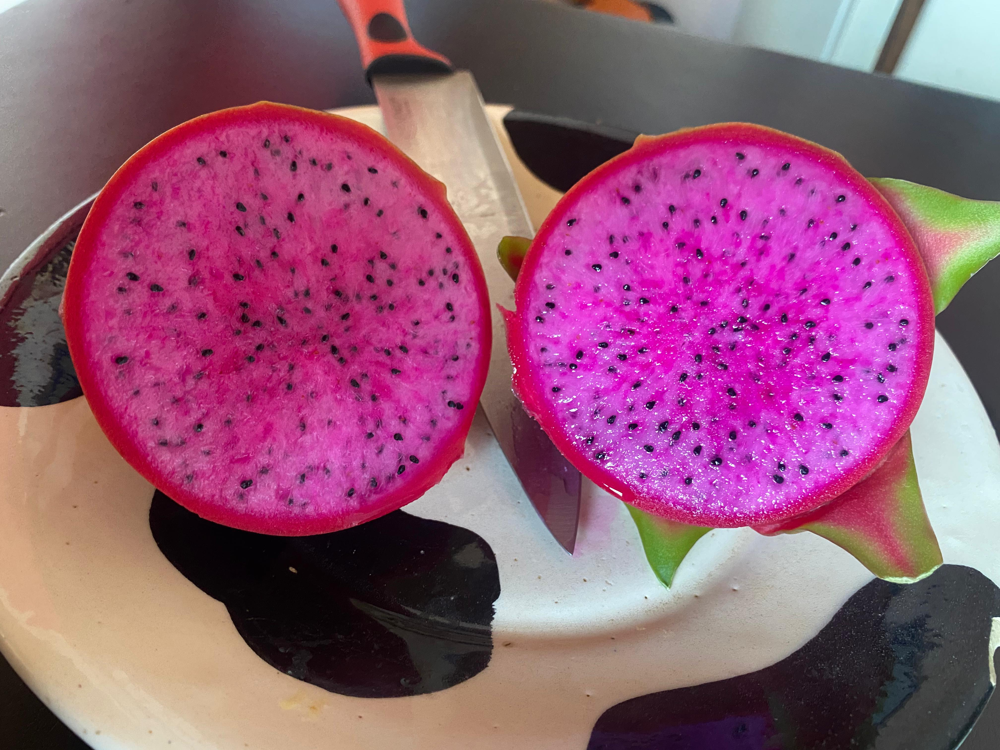
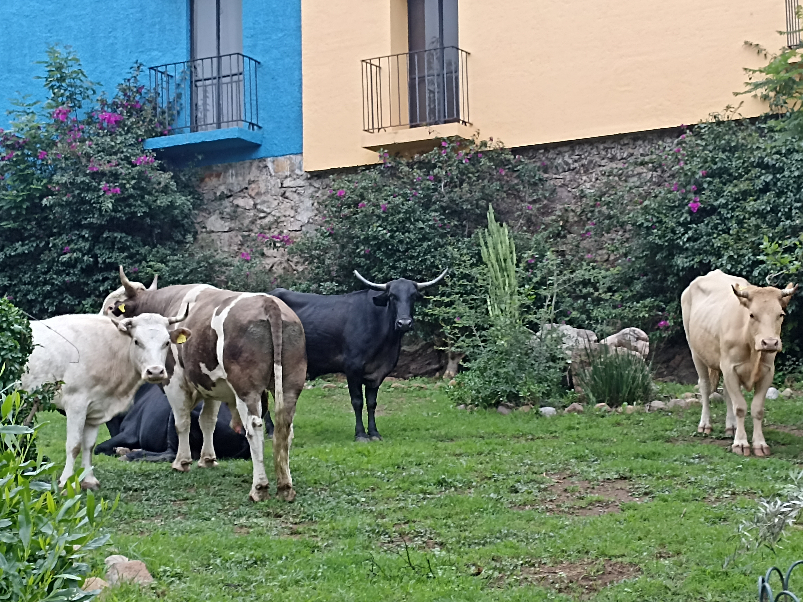
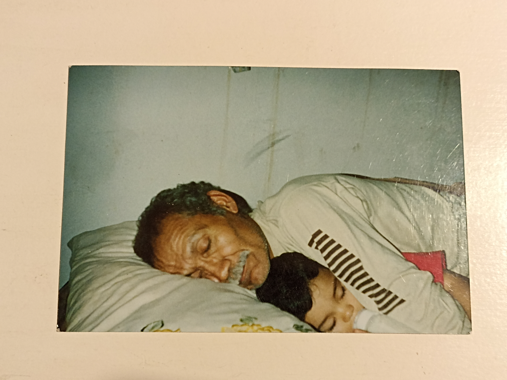
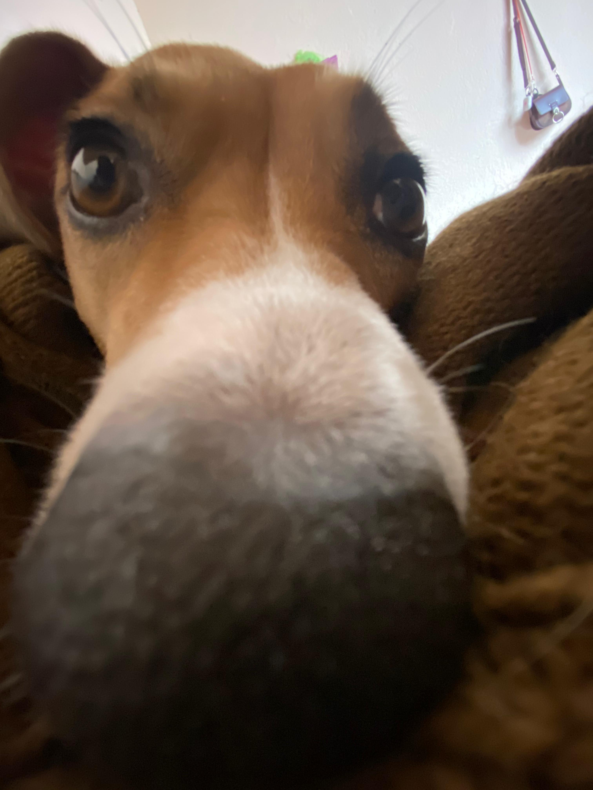
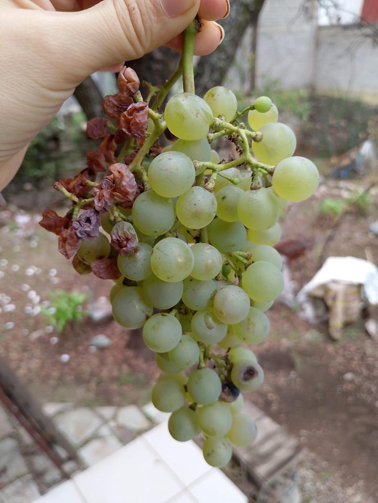
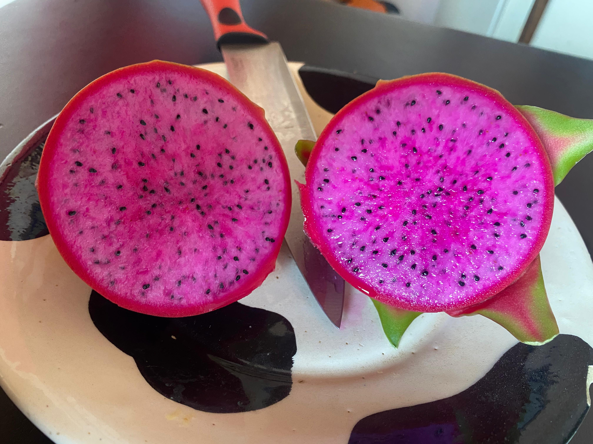
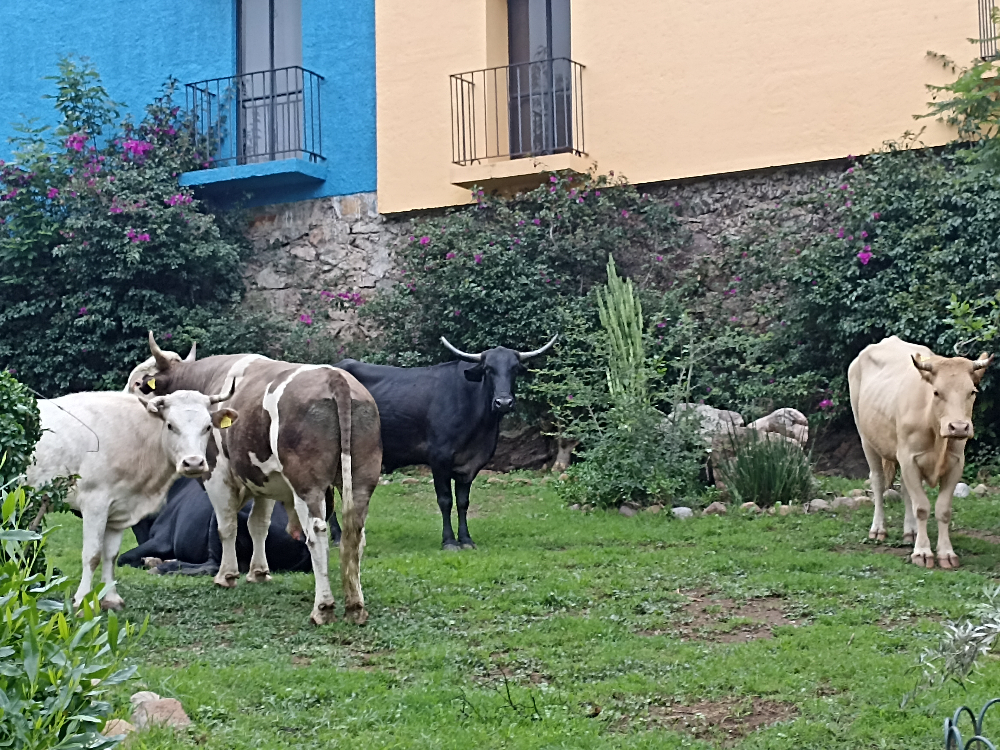
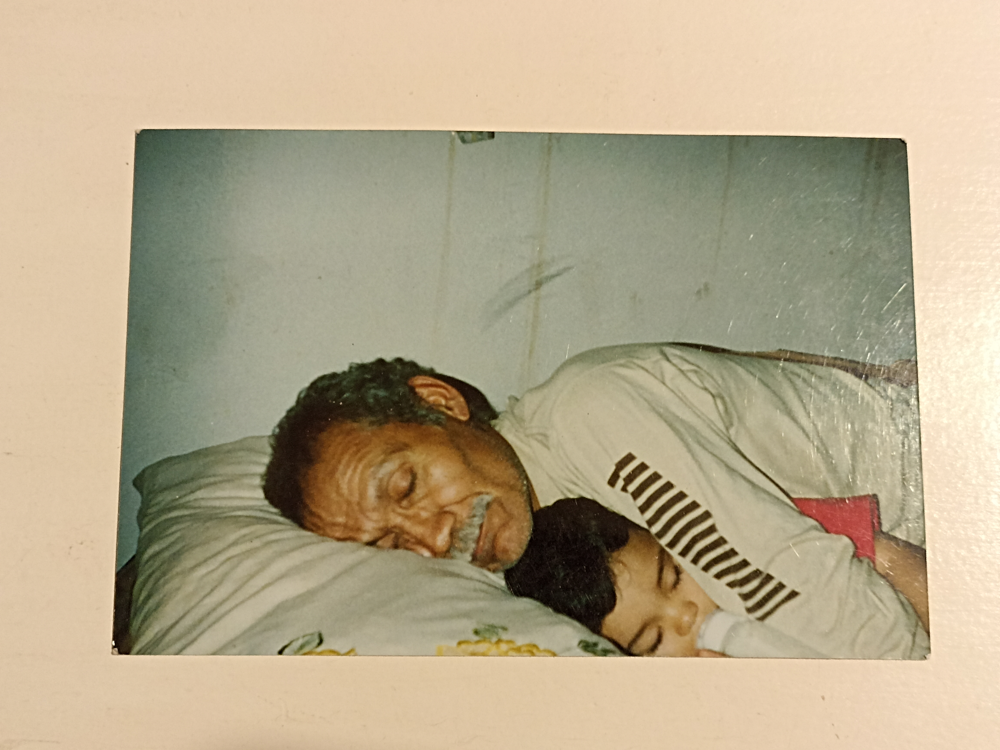
Entry: #10 hoy dormiré temprano
Date: 2024 07 29
Content: hoy me la pasé un rato sincronizando mis archivos, intenté rootear otro teléfono, sin éxito de nuevo. por fin dormí muy bien anoche, hoy todavía puedo dormir apropiadamente, sólo me falta meditar y prepararme para dormir. fue un buen día, en fin.
dejo una foto de un rincón de mi espacio que me gusta mucho, espero les guste.
dejo una foto de un rincón de mi espacio que me gusta mucho, espero les guste.
Entry: 2024 07 28
Date: #9 holy shit me equivoqué de lugar no he dormido
Content: lo dejo así para que vean jajaja. no he dormido y son las 6 am. por otra parte, me siento decentemente, tuve mucho tiempo para hacer cosas, pensar cosas, ver cosas. voy a ennumerar las cosas aquí, para no sentirme juzgado.
- arreglé mi espacio, acomodé cada ítem en su lugar. también lo hice de manera proactiva, pues no tardé mucho en decidir dónde iba cada cosa, como normalmente me pasa. este también es un buen paso para el proyecto de enlistar cada cosa que tengo, que estoy por iniciar.
- tomé fotos y videos de mi espacio acomodado.
- recorté un panfleto que no tenía mucho propósito, ahora es un bonito adorno.
- tiré basura,
- acomodé mi ropa también.
- comí.
- tomé agua.
- aprendí a grabar overhead con las herramientas que tengo disponibles.
- practiqué megaminx un buen rato.
- analicé mis resoluciones de megaminx otro buen rato.
- vi videos de mi youtuber favorito livakivi, que me inspiraron bastante.
- me lavé los dientes
overall, siento que fue una desvelada muy productiva, que nació de estar interesado en ver cosas, en hacer cosas, porque este día anterior lo pasé con mi novia, que no es que no me guste, pero siento que siempre tengo qué compensar el tiempo que no tuve para mí. ya me dieron mis horarios de la escuela, ya veré cómo me acomodo para lograr avanzar :) ya les iré contando.
- arreglé mi espacio, acomodé cada ítem en su lugar. también lo hice de manera proactiva, pues no tardé mucho en decidir dónde iba cada cosa, como normalmente me pasa. este también es un buen paso para el proyecto de enlistar cada cosa que tengo, que estoy por iniciar.
- tomé fotos y videos de mi espacio acomodado.
- recorté un panfleto que no tenía mucho propósito, ahora es un bonito adorno.
- tiré basura,
- acomodé mi ropa también.
- comí.
- tomé agua.
- aprendí a grabar overhead con las herramientas que tengo disponibles.
- practiqué megaminx un buen rato.
- analicé mis resoluciones de megaminx otro buen rato.
- vi videos de mi youtuber favorito livakivi, que me inspiraron bastante.
- me lavé los dientes
overall, siento que fue una desvelada muy productiva, que nació de estar interesado en ver cosas, en hacer cosas, porque este día anterior lo pasé con mi novia, que no es que no me guste, pero siento que siempre tengo qué compensar el tiempo que no tuve para mí. ya me dieron mis horarios de la escuela, ya veré cómo me acomodo para lograr avanzar :) ya les iré contando.
Entry: #8 yes sir
Date: 2024 07 26
Content: me sirvió mucho lo que les platiqué ayer. hoy rompí pbs de 3OH, lo que me pone muy feliz. aquí está el link al video. Más cosas, pues hoy estuve viendo videos de cómo se meten con dispositivos baratos para modificarlos con código, como python o C. he estado aprendiendo un poco de C y me parece muy interesante, lo básico pues es lo mismo que los otros lenguajes, pero siento que tiene mucho potencial el crear los programas para la línea de comandos, no sé cómo de hacen los UI, pero se ve padre la línea de comandos, es algo con lo que quiero trabajar. con esto, también he visto que es mucho más fácil de lo que pensaba poner Linux, en específico lo vi en un video
Entry: #7 yes sleep
Date: 2024 07 25
Content: Hoy otra vez traigo un pedazo de una newsletter que vi, esta vez la de James Clear, que también es de mis favoritas. Hoy comparte lo siguiente:
The bad workouts are the most important ones. It's easy to train when you feel good, but it's crucial to show up when you don't feel like it—even if you do less than you hope. Los entrenamientos malos son los más importantes. Es fácil entrenar cuando te sientes bien, pero es crucial presentarte cuando no quieres hacerlo, incluso si haces menos de lo que esperabas.Esto me hace reflexionar sobre mi hábito de sueño. Sí, yo creo que verdaderamente es importante presentarme cuando he hecho todo bien y aún así no puedo dormir. O cuando no he hecho nada bien, pero alcanzo a meterme en la cama para intentarlo, aunque lo demás me haya salido mal. A veces desaprovecho estas oportunidades porque pienso que no vale la pena, pero creo que sí vale la pena.
Ir al gimnasio por 15 minutos puede no mejorar tu desempeño, pero reafirma tu identidad. No siempre se trata de lo que pasa en el entrenamiento. Se trata de volverse el tipo de persona que no falta.
Entry: #6 NO SLEEP
Date: 2024 07 24
Content: He estado teniendo una recaída en las redes sociales. Hace no mucho se me señaló en terapia una dependencia o adicción a las redes sociales, de la cual me quiero librar, pero me parece a la vez tan captivante este mundo. No me agrada mucho, pierdo tiempo, energía, atención, sueño, pero a veces la vida real es muy aburrida sin eso. Había estado teniendo momentos de aburrimiento voluntario, de estar sin moverme, pensando, pero decidí modificarlos por no verlos productivos. Fue derrotado el objetivo inicial, que justamente era no tener objetivo más allá del acto mismo del aburrimiento. Yo creo que voy a llevar un pequeño habit tracker, para poder linkear y comentar.
En otras noticias, hice mi primer sub 30 en un rato, dejo el video aquí.
En otras noticias, hice mi primer sub 30 en un rato, dejo el video aquí.
Entry: #5
Date: 2024 07 23
Content: Hoy por fin puse las imágenes en los links de mi página web. Voy a poner un apartado de media, pero como es mucho, no lo terminaré hoy. Agregué la página de links, página que usaré como marcador para mis páginas favoritas de la web. Encontré recomendaciones para diferentes páginas en el sitio de 32-bit cafe, voy a intentar aplicar la mayoría.
Entry: #4 Recap de hoy
Date: 2024 07 21
Content: Hoy pasé demasiado tiempo en el teléfono, en redes sociales. Fue el último día del NAC (North American Championship) de cubos de Rubik y tengo un par de amigos compitiendo ahí que pasaron a las finales. No les fue bien en la final, pero aún así los admiro.
También hoy vi que Beth, una niña de Singapur que arma megaminx ya me ganó en single oficial. Vi en mi newsletter favorita, la de George Mack, un ensayo suyo titulado If you wait for the news, you'll either be wrong or late. Y así me siento actualmente, siento que estoy esperando la noticia de cuando me quiten en NR de megaminx, o algo por el estilo. Ya no me gusta mucho practicar mega, pero realmente no he empeorado tanto desde enero, tengo que aprovechar este espacio de oportunidad que tengo para intentar.
En fin, empezaré a poner imágenes por fin en el sitio :D . Gracias por leer.
También hoy vi que Beth, una niña de Singapur que arma megaminx ya me ganó en single oficial. Vi en mi newsletter favorita, la de George Mack, un ensayo suyo titulado If you wait for the news, you'll either be wrong or late. Y así me siento actualmente, siento que estoy esperando la noticia de cuando me quiten en NR de megaminx, o algo por el estilo. Ya no me gusta mucho practicar mega, pero realmente no he empeorado tanto desde enero, tengo que aprovechar este espacio de oportunidad que tengo para intentar.
{kind=link}
En fin, empezaré a poner imágenes por fin en el sitio :D . Gracias por leer.
Entry: #3 Información de mi bautismo
Date: 2024 07 20
Content: Mi abuelita me estuvo contando acerca de mi bautismo. Resulta que el padre que me bautizó (y casó a mis papás, el mismo día), se llama Policarpo Sesentaiocho Caraché. Le pusieron así porque ese fue el año en que nació. Además de eso, me platicó las lecturas que hubo ese día. La de la boda, el Génesis 2:18-24. El evangelio fue el de San Marcos 10:12-16, el Salmo del día fue el Salmo 128.
Salmo 128 (NVI) Dichosos todos los que temen al Señor, los que van por sus caminos.
2 Lo que ganes con tus manos, eso comerás; gozarás de dicha y prosperidad.
3 En el seno de tu hogar, tu esposa será como vid llena de uvas; alrededor de tu mesa, tus hijos serán como vástagos de olivo.
4 Así será bendecido aquel que teme al Señor.
5 Que el Señor te bendiga desde Sión y veas la prosperidad de Jerusalén todos los días de tu vida.
6 Que vivas para ver a los hijos de tus hijos. ¡Que haya paz en Israel!
Entry: #2 SOR después de mi competencia número 16
Date: 2024 07 20
Content:
Actualmente tengo de SOR (Sum of Ranks) en la WCA en México: 736 single, lo que me pone en puesto 17, y 906 de avg, puesto 16.
Ahora haré una especie de recap de cada categoría para ver en cuál puedo mejorar más.
Ahora haré una especie de recap de cada categoría para ver en cuál puedo mejorar más.
| cat | single | nr | wr | avg | nr | wr |
|---|---|---|---|---|---|---|
| 333 | 6.23 | 10 | 999 | 7.97 | 13 | 1047 |
| 222 | 1.84 | 69 | 4618 | 2.85 | 34 | 2391 |
| 444 | 30.51 | 30 | 1508 | 34.08 | 23 | 1116 |
| 555 | 58.48 | 25 | 1008 | 1:04.00 | 19 | 893 |
| 666 | 1:55.94 | 27 | 890 | 2:10.83 | 38 | 1156 |
| 777 | 3:22.58 | 47 | 1487 | 3:33.40 | 47 | 1429 |
| 3BLD | --- | 184 | 9770 | --- | 43 | 2862 |
| 3FMC | 36 | 46 | 3099 | --- | 96 | 4449 |
| 3OH | 9.85 | 4 | 363 | 13.10 | 5 | 482 |
| CLCK | 7.86 | 59 | 2595 | 10.77 | 80 | 3582 |
| MEGA | 29.84 | 1 | 24 | 33.01 | 1 | 21 |
| PYRA | 4.66 | 165 | 10491 | 7.16 | 147 | 9583 |
| SKWB | 3.76 | 103 | 4755 | 7.24 | 149 | 7485 |
| SQ1 | 13.04 | 38 | 2149 | 16.61 | 34 | 1801 |
| 4BLD | --- | 25 | 1631 | --- | 4 | 346 |
| 5BLD | --- | 9 | 833 | --- | 3 | 125 |
| MBLD | --- | 64 | 3351 | |||
| TOTAL | --- | 906 | 49560 | --- | 736 | 38761 |
Entry: #1 ASCII drawing
Date: 2024 07 20
Content: Hoy aprendí a traducir imagenes a dibujos ASCII (American Standard Code for Information Interchange). Me gusta mucho cómo se ve. El dibujo original es uno que hice en Paint con pocos pixeles, lo puedes ver aquí.
edit: quité el ascii pq no funcionaba bien, pero dejo una imagen del mismo
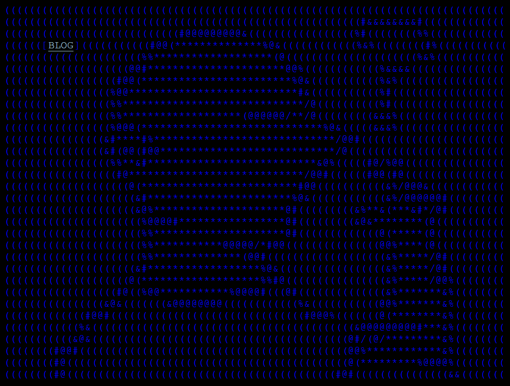
{kind=link}
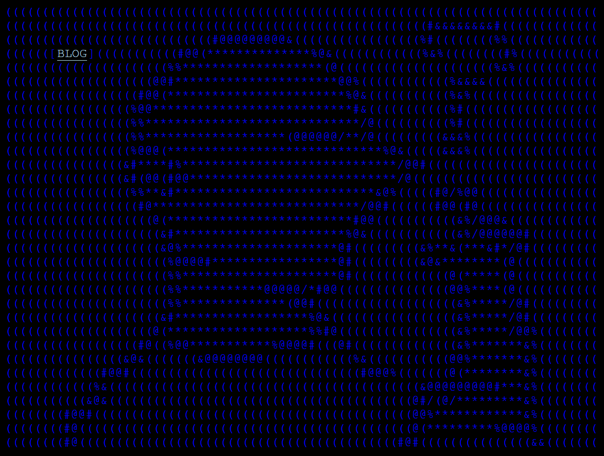